Chapter 2 Analysis by Conference Year
Bar and line charts to examine how contribution to conferences have changed over time.
#Load Data
#(After slightly cleaning column titles - in future include code to do that here)
rm(list=ls())
library(tidyverse)
library(ggplot2)
library(kableExtra)
path <- "C:/Users/k1076631/Google Drive/Research/Papers/InProgress/ialeUK_25years/QuantAnalysis/Rproject"
setwd(path)
filename <- "abstract_review_export_2018-06-11.csv"
cpdata <- read_csv(filename)#spec(cpdata)
yrdata <- cpdata %>%
select_if(is.numeric) %>%
group_by(`Conference Year`) %>%
summarise_all(sum, na.rm=T)
#use DT to present the entire data table on HTML? See https://rstudio.github.io/DT/2.1 Total Conference Contributions
Quick observations:
- general increase through time to early 2000s then drop but steady through 2010s
summary <- cpdata %>%
select_if(is.numeric) %>%
group_by(`Conference Year`) %>%
summarise_all(sum, na.rm=T) %>%
select(`Conference Year`,Academic, Government,NGO,Business,Private) %>%
mutate(count = rowSums(.[2:6])) %>%
select(`Conference Year`, count) %>%
mutate(prop = count/sum(count)) %>%
mutate(prop = round(prop,3))
summary %>%
kable() %>%
kable_styling() %>%
scroll_box(width = "100%")| Conference Year | count | prop |
|---|---|---|
| 1992 | 19 | 0.021 |
| 1994 | 30 | 0.033 |
| 1995 | 44 | 0.048 |
| 1996 | 33 | 0.036 |
| 1997 | 62 | 0.068 |
| 1998 | 62 | 0.068 |
| 1999 | 33 | 0.036 |
| 2000 | 24 | 0.026 |
| 2001 | 58 | 0.063 |
| 2002 | 71 | 0.078 |
| 2004 | 66 | 0.072 |
| 2005 | 29 | 0.032 |
| 2006 | 58 | 0.063 |
| 2008 | 24 | 0.026 |
| 2009 | 33 | 0.036 |
| 2010 | 33 | 0.036 |
| 2011 | 46 | 0.050 |
| 2012 | 36 | 0.039 |
| 2014 | 40 | 0.044 |
| 2015 | 40 | 0.044 |
| 2016 | 27 | 0.030 |
| 2017 | 46 | 0.050 |
ggplot(summary, aes(x=`Conference Year`, y=count)) +
geom_bar(stat="identity") 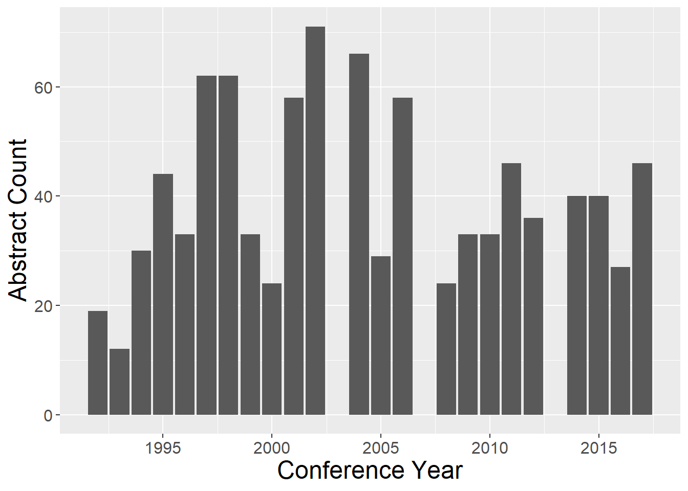
2.2 Author Affiliation
Quick observations:
- Academic contributors generally dominate
- Government contributors have decreased through time
- NGO attendance has replaced declines in Government? (could check sum of Gov + NGO through time)
authorCounts <- yrdata %>%
select(`Conference Year`,Academic, Government,NGO,Business,Private) %>%
mutate(yrsum = rowSums(.[2:6])) %>% #calculate total for subsquent calcultation of proportion
gather(key = Type, value = count, -`Conference Year`, -yrsum) %>%
mutate(prop = count / yrsum) #calculate proportion
ggplot(authorCounts, aes(x=`Conference Year`, y=count)) + geom_line(aes(colour=Type))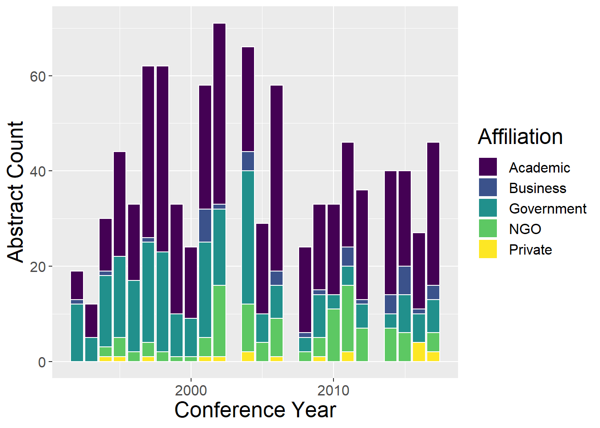
ggplot(authorCounts, aes(x=`Conference Year`, y=count, fill=Type)) + geom_bar(stat="identity", colour="white")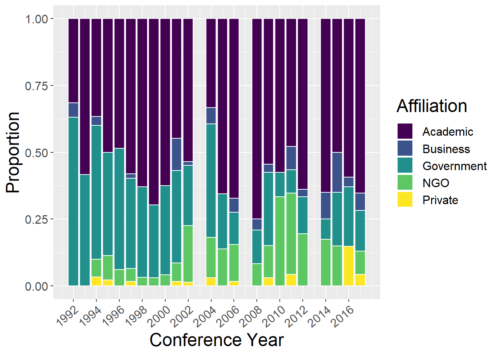
ggplot(authorCounts, aes(x=`Conference Year`, y=prop, fill=Type)) + geom_bar(stat="identity", colour="white")
2.3 Landscape Type
Quick observations:
- Lowland rural generaly dominates (but lesser contribution in later years)
- Spikes in some years for types (corresponding to special themes)
- Urban and Seascape both appear for first time in 1998; urban then constant presence, but seascape more variable until recent years
lspCounts <- yrdata %>%
select(`Conference Year`,`Upland rural`, `Lowland rural`, Urban, Riverscape, Seascape, `Undefined LspType`,Other) %>%
mutate(yrsum = rowSums(.[2:8])) %>%
gather(key = Type, value = count, -`Conference Year`, -yrsum) %>%
mutate(prop = count / yrsum)
ggplot(lspCounts, aes(x=`Conference Year`, y=count)) + geom_line(aes(colour=Type))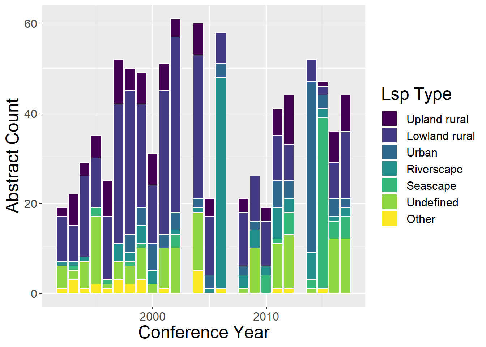
ggplot(lspCounts, aes(x=`Conference Year`, y=count, fill=Type)) + geom_bar(stat="identity", colour="white")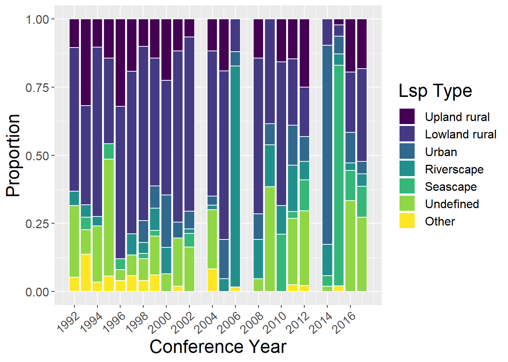
ggplot(lspCounts, aes(x=`Conference Year`, y=prop, fill=Type)) + geom_bar(stat="identity", colour="white")2.4 Organism
Quick observations:
- no clear patterns
- some years contain no Generic Habitat - is this real or a data entry issue?
sppCounts <- yrdata %>%
select(`Conference Year`,Mammals, Humans, Birds, Reptiles, Inverts, Plants, Amphibians, Fish, `Generic Habitat`,`Woodland Forests`) %>%
mutate(yrsum = rowSums(.[2:11])) %>%
gather(key = Type, value = count, -`Conference Year`, -yrsum) %>%
mutate(prop = count / yrsum)
ggplot(sppCounts, aes(x=`Conference Year`, y=count)) + geom_line(aes(colour=Type))ggplot(sppCounts, aes(x=`Conference Year`, y=count, fill=Type)) + geom_bar(stat="identity", colour="white")ggplot(sppCounts, aes(x=`Conference Year`, y=prop, fill=Type)) + geom_bar(stat="identity", colour="white")2.5 Methods
Quick observations:
- empirical studies have decreased through time
- GIS and qualitative have increased through time
- Quantitative and theoretical quite steady through time (although theoretical does seem to have reduced after initial years)
methodsCounts <- yrdata %>%
select(`Conference Year`, Empirical, Theoretical, Qualitative, Quantitative, GIS, `Remote sensing`) %>%
mutate(yrsum = rowSums(.[2:7])) %>%
gather(key = Type, value = count, -`Conference Year`, -yrsum) %>%
mutate(prop = count / yrsum)
ggplot(methodsCounts, aes(x=`Conference Year`, y=count)) + geom_line(aes(colour=Type))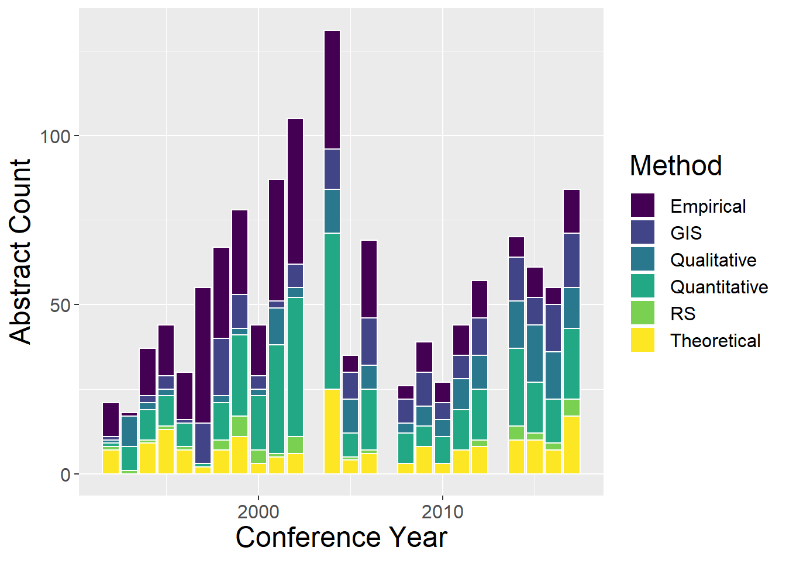
ggplot(methodsCounts, aes(x=`Conference Year`, y=count, fill=Type)) + geom_bar(stat="identity", colour="white")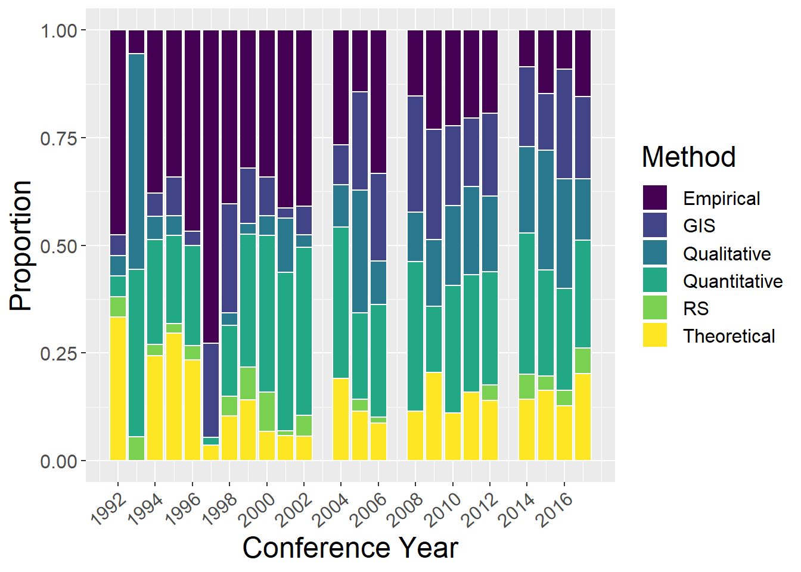
ggplot(methodsCounts, aes(x=`Conference Year`, y=prop, fill=Type)) + geom_bar(stat="identity", colour="white")2.6 Spatial Extent
Quick observations:
- no clear trends?
- Global studies only appear from 2014 onwards
extentCounts <- yrdata %>%
select(`Conference Year`, Micro, Mini, Local, Regional, National, Continental, Global,`Undefined Extent`) %>%
mutate(yrsum = rowSums(.[2:9])) %>%
gather(key = Type, value = count, -`Conference Year`, -yrsum) %>%
mutate(prop = count / yrsum)
ggplot(extentCounts, aes(x=`Conference Year`, y=count)) + geom_line(aes(colour=Type))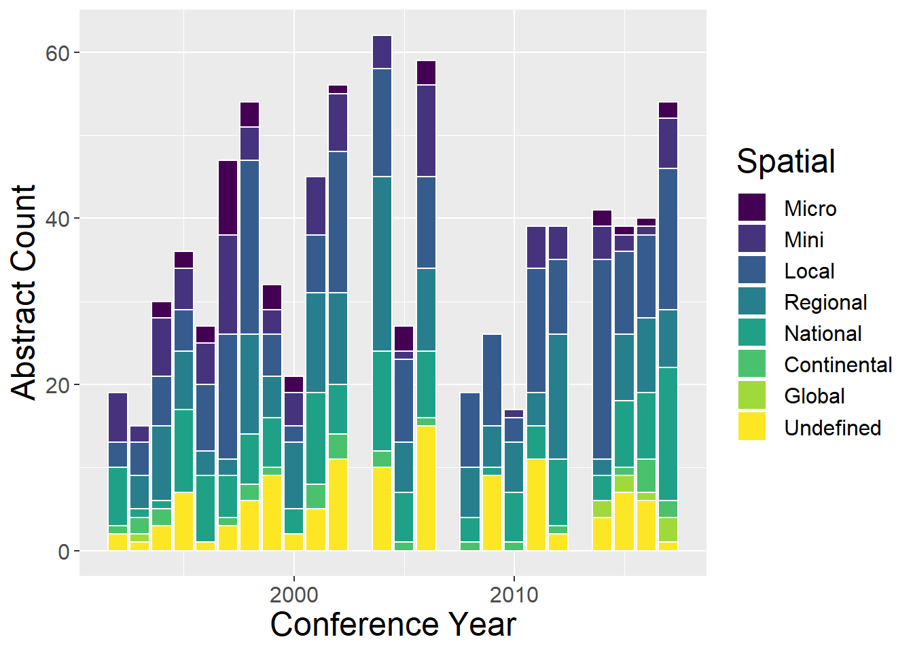
ggplot(extentCounts, aes(x=`Conference Year`, y=count, fill=Type)) + geom_bar(stat="identity", colour="white")
ggplot(extentCounts, aes(x=`Conference Year`, y=prop, fill=Type)) + geom_bar(stat="identity", colour="white")2.7 Temporal Extent
Quick observations:
- most studies have undefined temporal duration
- those that do are dominated by studies over decades and years 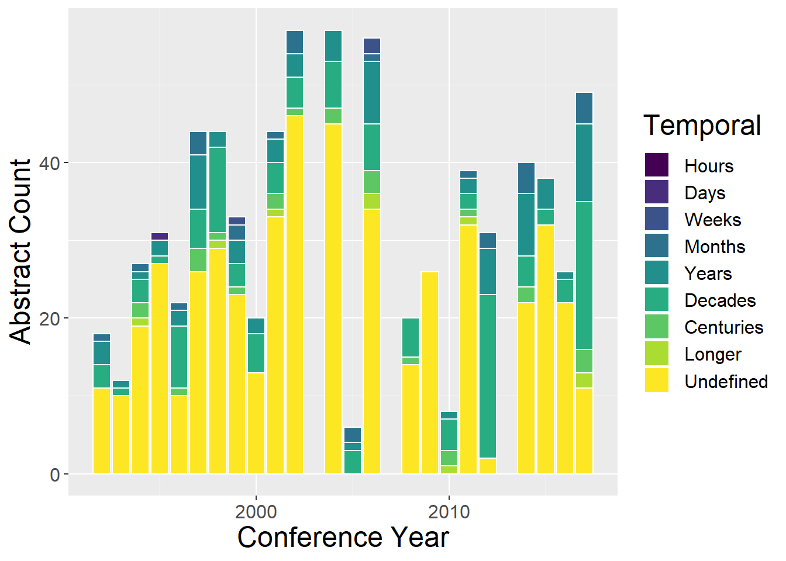
2.8 Concepts
Quick observations:
- Ecosystem services appear from 1998 and have grown recently
- climate change interactions have only become common recently (since 2008)
- ‘Scale and scaling’ and ’connectivity and fragmentation seem to have decreased in recent years
- LUCC and Spatial Analysis are mainstays throughout
conceptCounts <- yrdata %>%
select(`Conference Year`, `PPS of landscapes`,
`Connectivity and fragmentation`, `Scale and scaling`,`Spatial analysis and modeling`,LUCC,`History and legacy`,`Climate change interactions`,`Ecosystem services`,`Landscape sustainability`,`Accuracy and uncertainty`
) %>%
mutate(yrsum = rowSums(.[2:11])) %>%
gather(key = Type, value = count, -`Conference Year`, -yrsum) %>%
mutate(prop = count / yrsum)
ggplot(conceptCounts, aes(x=`Conference Year`, y=count)) + geom_line(aes(colour=Type))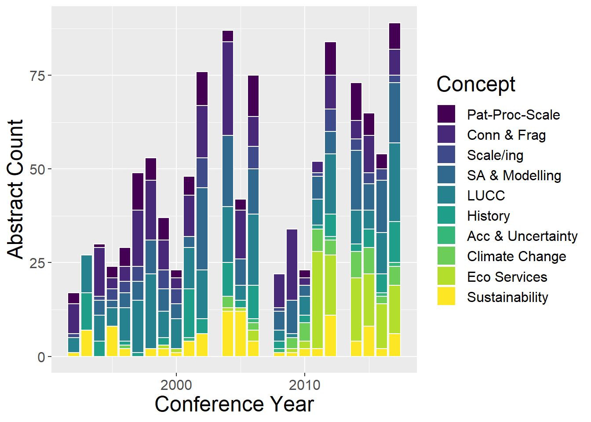
ggplot(conceptCounts, aes(x=`Conference Year`, y=count, fill=Type)) + geom_bar(stat="identity", colour="white")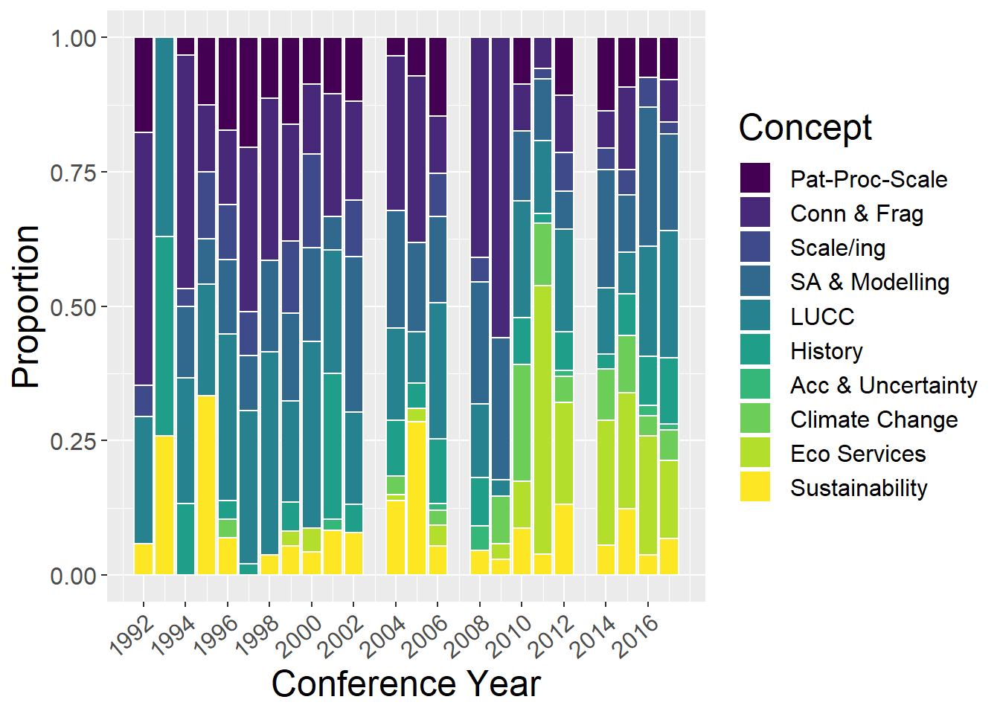
ggplot(conceptCounts, aes(x=`Conference Year`, y=prop, fill=Type)) + geom_bar(stat="identity", colour="white")2.9 Other Concepts
Quick observations:
- socio-economic studies have increased through time
- biodiversity has decreased through time
- Landscape management and Biodiversity peak in early 2000s
othCCounts <- yrdata %>%
select(`Conference Year`, `Green Infrastructure`,`Planning and Architecture`,`Management and Conservation`,`Cultural Landscapes`,`Socio-economic Dimensions`,Biodiversity,`Landscape Assessment`,`Catchment Based Approach`,`Invasives Pests Diseases`
) %>%
mutate(yrsum = rowSums(.[2:10])) %>%
gather(key = Type, value = count, -`Conference Year`, -yrsum) %>%
mutate(prop = count / yrsum)
ggplot(othCCounts, aes(x=`Conference Year`, y=count)) + geom_line(aes(colour=Type))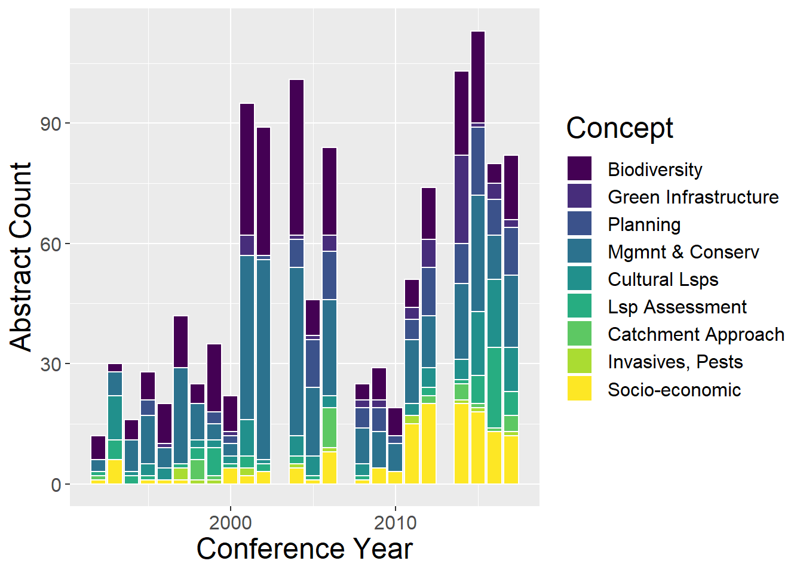
ggplot(othCCounts, aes(x=`Conference Year`, y=count, fill=Type)) + geom_bar(stat="identity", colour="white")ggplot(othCCounts, aes(x=`Conference Year`, y=prop, fill=Type)) + geom_bar(stat="identity", colour="white")